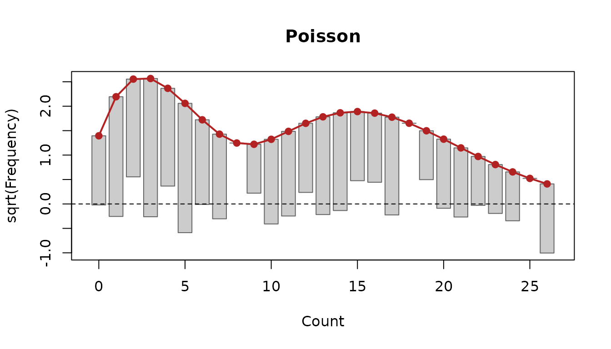
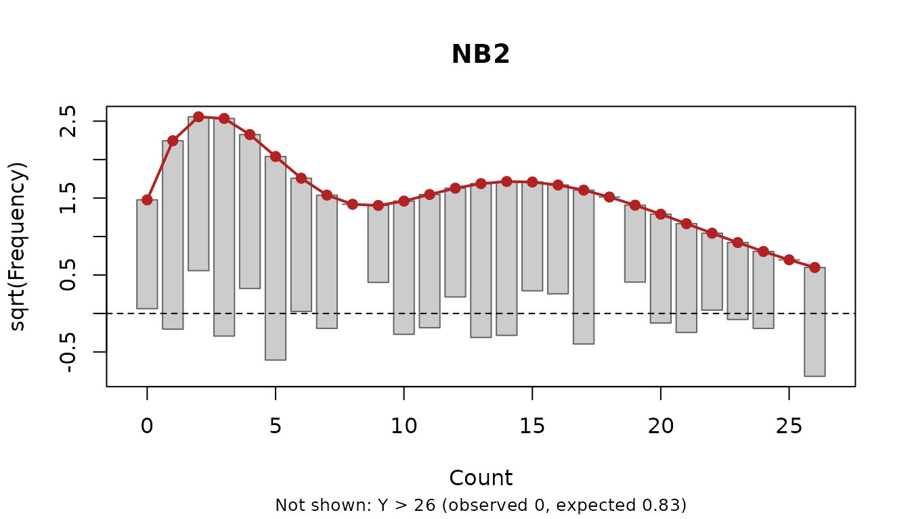

This tutorial walks through a complete first analysis: describing count data, fitting a Poisson regression, checking whether its variance assumption holds, comparing alternatives fitted to the same rows, and turning the chosen model into predictions with uncertainty.
The question and the data
InsectSprays (in base R’s datasets package) records the
number of insects counted in agricultural experimental units treated
with one of six insecticides, labelled A to F (Beall, 1942). The
questions are:
- How does the expected insect count differ between sprays?
- How much do counts vary between units treated with the same spray?
library(flexCountReg)
d <- datasets::InsectSprays
str(d)
#> 'data.frame': 72 obs. of 2 variables:
#> $ count: num 10 7 20 14 14 12 10 23 17 20 ...
#> $ spray: Factor w/ 6 levels "A","B","C","D",..: 1 1 1 1 1 1 1 1 1 1 ...The observational unit is one experimental unit. The outcome
count is a non-negative whole number; spray is
a factor with six levels. There is no exposure variable (all units are
treated as comparable), no grouping beyond the spray, and no missing
values:
Describe the counts
set.seed(1) # the horizontal jitter is random
stripchart(count ~ spray, data = d, vertical = TRUE, method = "jitter",
pch = 1, xlab = "Spray", ylab = "Insect count")
means <- tapply(d$count, d$spray, mean)
segments(seq_along(means) - 0.25, means, seq_along(means) + 0.25, means,
lwd = 3)Insect counts by spray (each point is one unit; the bar marks the mean).
grp <- data.frame(mean = tapply(d$count, d$spray, mean),
variance = tapply(d$count, d$spray, var))
grp$ratio <- grp$variance / grp$mean
round(grp, 2)
#> mean variance ratio
#> A 14.50 22.27 1.54
#> B 15.33 18.24 1.19
#> C 2.08 3.90 1.87
#> D 4.92 6.27 1.27
#> E 3.50 3.00 0.86
#> F 16.67 38.61 2.32Over all units the variance-to-mean ratio is 5.5, far above the value
of 1 implied by a Poisson distribution. That number is only descriptive:
most of it comes from the large differences in means between sprays,
which a regression on spray explains. Within sprays the
ratios are much closer to 1 (between 0.86 and 2.32). Whether that is
real overdispersion is a question for the fitted models below.
A Poisson regression
pois <- countreg(count ~ spray, data = d, family = "POISSON",
method = "BFGS")
summary(pois)
#> Call:
#> countreg(formula = count ~ spray, data = d, family = "POISSON",
#> method = "BFGS")
#>
#> Model: countreg | family: POISSON | optimizer: BFGS
#> Iterations: 2
#> Convergence: successful convergence
#>
#> Coefficients (standard errors: Hessian-based):
#> Estimate Std. Error z value Pr(>|z|)
#> (Intercept) 2.6741 0.0758 35.27 <2e-16 ***
#> sprayB 0.0559 0.1057 0.53 0.60
#> sprayC -1.9402 0.2139 -9.07 <2e-16 ***
#> sprayD -1.0815 0.1507 -7.18 7e-13 ***
#> sprayE -1.4214 0.1719 -8.27 <2e-16 ***
#> sprayF 0.1393 0.1037 1.34 0.18
#> ---
#> Signif. codes: 0 '***' 0.001 '**' 0.01 '*' 0.05 '.' 0.1 ' ' 1
#>
#> Log-likelihood: -182.295 | AIC: 376.589 | BIC: 390.249
#> N: 72The Poisson model has a log link, so exp(coefficient) is
a rate ratio: the expected count for a spray relative to spray A (the
reference level).
tidy(pois, conf.int = TRUE, exponentiate = TRUE)
#> # A tibble: 6 × 8
#> term component estimate std.error statistic p.value conf.low conf.high
#> <chr> <chr> <dbl> <dbl> <dbl> <dbl> <dbl> <dbl>
#> 1 (Intercep… mean 14.5 1.10 35.3 1.45e-272 12.5 16.8
#> 2 sprayB mean 1.06 0.112 0.528 5.97e- 1 0.860 1.30
#> 3 sprayC mean 0.144 0.0307 -9.07 1.18e- 19 0.0945 0.218
#> 4 sprayD mean 0.339 0.0511 -7.18 7.03e- 13 0.252 0.456
#> 5 sprayE mean 0.241 0.0415 -8.27 1.37e- 16 0.172 0.338
#> 6 sprayF mean 1.15 0.119 1.34 1.79e- 1 0.938 1.41For the Poisson family, countreg() maximizes the same
likelihood as glm(), and the results agree:
Is the Poisson variance adequate?
With only a factor in the model, each spray’s expected count is its sample mean. What remains to check is the variance. The Pearson statistic divided by its residual degrees of freedom should be close to 1 for a Poisson model:
pearson <- function(fit, k) sum(residuals(fit, type = "pearson")^2) /
(nobs(fit) - k)
pearson(pois, length(coef(pois)))
#> [1] 1.507713A rootogram compares the observed frequency of each count with the frequency expected under the fitted model (hanging bars that end above or below zero mark counts that are under- or over-predicted):
rootogram(pois, main = "Poisson")
Hanging rootogram of the Poisson model.
Randomized quantile residuals are approximately standard normal when the model is correct. They involve random numbers (counts are discrete), so set a seed to make them reproducible:
set.seed(2026)
qr_pois <- residuals(pois, type = "quantile")
plot(predict(pois), qr_pois, xlab = "Fitted mean",
ylab = "Quantile residual", main = "Poisson")
abline(h = c(-2, 0, 2), lty = c(2, 1, 2))Randomized quantile residuals of the Poisson model against the fitted means.
A Pearson ratio of 1.51 suggests some extra variation within sprays beyond the Poisson variance.
Alternatives fitted to the same rows
Two common extensions of the Poisson model add a dispersion parameter \(\alpha\):
- NB2: \(Var(Y) = \mu + \alpha\mu^2\) (extra variance grows with the square of the mean);
- NB1: \(Var(Y) = \mu(1 + \alpha)\) (extra variance proportional to the mean).
Both keep the same mean model, so their coefficients have the same rate-ratio interpretation.
nb2 <- countreg(count ~ spray, data = d, family = "NB2", method = "BFGS")
nb1 <- countreg(count ~ spray, data = d, family = "NB1", method = "BFGS")
c(poisson = nobs(pois), nb2 = nobs(nb2), nb1 = nobs(nb1))
#> poisson nb2 nb1
#> 72 72 72All three models use the same 72 rows, so their likelihoods are comparable. Each summary reports a likelihood-ratio test against the Poisson model; because a dispersion of zero is on the boundary of the parameter space, the p-value uses a 50:50 mixture of chi-square distributions:
summary(nb2)
#> Call:
#> countreg(formula = count ~ spray, data = d, family = "NB2", method = "BFGS")
#>
#> Model: countreg | family: NB2 | optimizer: BFGS
#> Iterations: 14
#> Convergence: successful convergence
#>
#> Coefficients (standard errors: Hessian-based):
#> Estimate Std. Error z value Pr(>|z|)
#> (Intercept) 2.6741 0.0933 28.65 < 2e-16 ***
#> sprayB 0.0559 0.1308 0.43 0.67
#> sprayC -1.9402 0.2273 -8.53 < 2e-16 ***
#> sprayD -1.0815 0.1692 -6.39 1.6e-10 ***
#> sprayE -1.4214 0.1884 -7.55 4.5e-14 ***
#> sprayF 0.1393 0.1291 1.08 0.28
#> ln(alpha) -3.3358 0.6299 -5.30 1.2e-07 ***
#> ---
#> Signif. codes: 0 '***' 0.001 '**' 0.01 '*' 0.05 '.' 0.1 ' ' 1
#>
#> Log-likelihood: -180.109 | AIC: 374.218 | BIC: 390.155
#> N: 72
#> LR test vs Poisson: chi-sq = 4.371 on 1 df, p-value = 0.0183 (boundary-corrected)
cmp <- data.frame(
model = c("Poisson", "NB2", "NB1"),
logLik = c(logLik(pois), logLik(nb2), logLik(nb1)),
parameters = c(length(coef(pois)), length(coef(nb2)), length(coef(nb1))),
AIC = c(AIC(pois), AIC(nb2), AIC(nb1)),
BIC = c(BIC(pois), BIC(nb2), BIC(nb1)),
LR_p_vs_Poisson = c(NA, summary(nb2)$lr_test$p.value,
summary(nb1)$lr_test$p.value))
cmp[, -1] <- round(cmp[, -1], 3)
cmp
#> model logLik parameters AIC BIC LR_p_vs_Poisson
#> 1 Poisson -182.295 6 376.589 390.249 NA
#> 2 NB2 -180.109 7 374.218 390.155 0.018
#> 3 NB1 -180.327 7 374.654 390.590 0.024Both negative binomial models improve on the Poisson model (likelihood-ratio p = 0.018 for NB2 and 0.024 for NB1), and AIC prefers either of them; BIC, which penalizes the extra parameter more, is about the same for all three. The evidence for extra variation is modest but consistent.
A limitation to recognize: two models that the data cannot separate
NB1 and NB2 differ only in how the extra variance grows with the mean, and their log-likelihoods differ by 0.22. Neither model is a special case of the other, so a likelihood-ratio test between them is not valid, and flexCountReg does not report one:
regCompTest(nb1, model2 = nb2)$statistics
#> Warning: The models have the same number of parameters, so they are not nested;
#> the LR test is not reported.
#> # A tibble: 8 × 3
#> Statistic Model BaseModel
#> <chr> <dbl> <dbl>
#> 1 Log-likelihood -180. -180.
#> 2 Number of parameters 7 7
#> 3 AIC 374. 375.
#> 4 BIC 390. 391.
#> 5 LR Test Statistic NA NA
#> 6 LR degrees of freedom NA NA
#> 7 LR p-value NA NA
#> 8 McFadden's Pseudo R^2 0.467 0.466With only 12 units per spray, the data cannot tell the two variance forms apart. What matters for the question is that the spray effects are almost the same under all three models:
round(cbind(Poisson = coef(pois)[1:6], NB2 = coef(nb2)[1:6],
NB1 = coef(nb1)[1:6]), 3)
#> Poisson NB2 NB1
#> (Intercept) 2.674 2.674 2.674
#> sprayB 0.056 0.056 0.058
#> sprayC -1.940 -1.940 -1.958
#> sprayD -1.082 -1.082 -1.073
#> sprayE -1.421 -1.421 -1.401
#> sprayF 0.139 0.139 0.134The rest of the tutorial uses NB2, the more common choice; using NB1 instead would not change the conclusions.
rootogram(nb2, main = "NB2")
Hanging rootogram of the NB2 model.
Predictions by spray
A prediction grid with one row per spray makes the comparison explicit. A confidence interval describes the uncertainty about the expected count; a prediction interval describes where a single new unit’s count is likely to fall, so it is much wider:
new_spray <- data.frame(spray = factor(levels(d$spray),
levels = levels(d$spray)))
ci <- predict(nb2, newdata = new_spray, interval = "confidence")
pr <- predict(nb2, newdata = new_spray, interval = "prediction",
level = 0.90)
pred <- data.frame(spray = new_spray$spray, expected = ci$fit,
ci_lower = ci$lwr, ci_upper = ci$upr,
pi90_lower = pr$lwr, pi90_upper = pr$upr)
pred[, 2:4] <- round(pred[, 2:4], 2)
pred
#> spray expected ci_lower ci_upper pi90_lower pi90_upper
#> 1 A 14.50 12.10 17.33 7 23
#> 2 B 15.33 12.82 18.27 8 25
#> 3 C 2.08 1.39 3.10 0 5
#> 4 D 4.92 3.71 6.40 1 10
#> 5 E 3.50 2.51 4.75 1 7
#> 6 F 16.67 13.98 19.73 8 26
# Sprays below the overall mean, and whether their confidence intervals
# are separated from those of the other sprays
low <- ci$fit < mean(d$count)
separated <- max(ci$upr[low]) < min(ci$lwr[!low])
x <- seq_len(nrow(pred))
plot(x, pred$expected, ylim = range(0, pr$upr), xaxt = "n", pch = 19,
xlab = "Spray", ylab = "Insect count")
axis(1, at = x, labels = pred$spray)
segments(x, pr$lwr, x, pr$upr, lwd = 1)
segments(x, ci$lwr, x, ci$upr, lwd = 4)Expected counts with 95% confidence intervals (thick) and 90% prediction intervals for a new unit (thin).
The intervals are computed from the fitted model’s estimation
uncertainty using deterministic Halton draws, so rerunning gives the
same values; the prediction-interval limits are whole counts. See
?predict.flexCountReg for the method, and
?tolerance_interval for intervals intended to contain a
stated share of all units’ counts.
These are model-based comparisons of the sprays in this experiment. Sprays C, D, E have expected counts below the overall mean, and their 95% confidence intervals are entirely below those of sprays A, B, F. Interpreting the differences as effects of the insecticides relies on the design of the original experiment, not on the model.
Another pitfall: levels not seen in the data
Predictions use the factor levels of the training data. A level that
was never observed has no coefficient, and predict() stops
with an informative error rather than guessing:
tryCatch(predict(nb2, newdata = data.frame(spray = "G")),
error = function(e) conditionMessage(e))
#> [1] "factor spray has new level G"The analysis in one script
library(flexCountReg)
d <- datasets::InsectSprays
pois <- countreg(count ~ spray, data = d, family = "POISSON",
method = "BFGS")
nb2 <- countreg(count ~ spray, data = d, family = "NB2", method = "BFGS")
summary(nb2)
rootogram(nb2)
new_spray <- data.frame(spray = factor(levels(d$spray),
levels = levels(d$spray)))
predict(nb2, newdata = new_spray, interval = "confidence")
predict(nb2, newdata = new_spray, interval = "prediction", level = 0.90)Next steps
-
vignette("choosing-a-count-distribution", package = "flexCountReg")compares many more distributions and models for the dispersion and the zeros. -
vignette("inference-prediction-and-comparison", package = "flexCountReg")covers standard errors, marginal effects and the conditions under which likelihood-ratio tests are valid. -
?count_familieslists every distribution available incountreg(). -
vignette("predictions-and-effects", package = "flexCountReg")interprets predictions, contrasts and marginal effects. -
vignette("data-exposure-weights", package = "flexCountReg")covers offsets, weights and the analysis sample. -
vignette("diagnosing-count-models", package = "flexCountReg")checks a fitted model with residuals and rootograms.